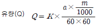
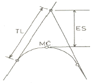
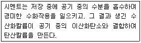

산림기사 (2013-03-10 기출문제)
1과목: 조림학
1. 잡목림 3ha를 개발하고 이곳에 1~3년생 잣나무를 2m×3m 장방형으로 조림하고자 한다. 필요한 묘목수는?
- 3000주
- 4000주
- 5000주
- 6000주
(정답률: 84%)

2. 성숙한 종자가 발아하기에 적합한 환경에서도 발아하지 못하고 휴면상태에 있는 원인에 해당하지 않는 것은?
- 배휴면
- 종피휴면
- 생리적휴면
- 이차휴면
(정답률: 73%)
3. 조림수종을 선택하는 요건중 틀린 것은?
- 성장속도가 빠르고 재적생장량이 높은 것.
- 위해에 대하여 저항력이 강한 것.
- 가지가 굵고 길며, 줄기가 곧은 것.
- 산물의 이용가치가 높고 수요량이 많은 것.
(정답률: 84%)
4. 수종과 연령 및 입지를 동일하게 하고 밀도만을 다르게 했을 때 임목의 형질과 생산량에 나타나는 현상으로 옳은것은?
- 지하고는 고밀도일수록 낮아진다.
- 상층목의 평균수고는 임목밀도에 따라 크게 다르다.
- 단목의 평균간재적은 고밀도일수록 커진다.
- 고밀도일수록 연륜폭은 좁아진다.
(정답률: 68%)
5. 모수림작업에서 단풍나무류의 1ha당 적정한 잔존본수는?(오류 신고가 접수된 문제입니다. 반드시 정답과 해설을 확인하시기 바랍니다.)
- 10본 내외
- 15~50본 정도
- 50~100본 정도
- 100본 이상
(정답률: 62%)
6. 순림(純林)의 장점이 아닌 것은?
- 간벌 등 작업이 용이하다.
- 경관상으로 더 아름다울 수 있다
- 조림이 경제적으로 될 수 있다.
- 병충해에 강하다.
(정답률: 91%)
7. 식물체 내 여러 가지 중요한 기능을 나타내는 무기 양료에서 건전한 잎의 건중(乾重)에 포함된 다량원소가 아닌 것은?
- 철
- 질소
- 마그네슘
- 황
(정답률: 64%)
8. 다음 접목 방법 중 소나무류에서 주로 실시하는 것은?
- 절접
- 할접
- 박접
- 아접
(정답률: 87%)
9. 학명에 대한 설명 중에서 틀린 것은?
- 사용하는 언어는 라틴어이거나 라틴어화 하여 사용해야 한다.
- 종소명은 소문자로 한다.
- 속명과 명명자 이름은 모두 대문자로 쓴다.
- 물품표기는 명명자 다음에 온다.
(정답률: 23%)
10. 온도가 식물에 끼치는 영향에 대한 설명으로 틀린것은?
- 많은 식물의 경우 광합성에 대한 최적온도는 최적 호흡에 대한 최적온도 보다 높다.
- 산간에서 흐르는 찬물로 관개를 하면 위조가 올 수 있다.
- 환경의 제한으로 받게 되는 휴면을 다발휴면이라 한다.
- 월평균온도에 있어서 5℃ 이상의 값을 적산한 값을 온량지수라 한다.
(정답률: 50%)
11. 파종상실면적 500m2, 묘목잔존본수 1000본/m2, 1g당 종자 평균입수 60립, 순량율 0.90, 실험실 발아율 0.90, 묘목잔존율을 0.4로 가정할 때의 파종량은?
- 25.7kg
- 28.2kg
- 28.7kg
- 29.2kg
(정답률: 79%)
12. 가지치기의 주 효과가 아닌 것은?(오류 신고가 접수된 문제입니다. 반드시 정답과 해설을 확인하시기 바랍니다.)
- 지엽이 부식되어 토양비옥도를 높인다.
- 무절 완만재를 생산한다.
- 직경 생장을 증대한다.
- 산림의 여러 가지 해를 예방한다.
(정답률: 53%)
13. 임지의 지위지수(site index)를 평가하는 방법에 대하여 바르게 기술하고 있는 것은?
- 특정 임령에서 그 임분의 우세목의 수고로 지위지 수를 결정한다.
- 특정 임령에서 그 임분의 우세목의 재적으로 지위지수를 결정한다.
- 특정 임령에서 그 임분을 구성하는 우세목과 열세목의 평균직경으로 지위지수를 결정한 다.
- 특정 임령에서 그 임분의 전체 축적으로 지위지수를 결정한다.
(정답률: 73%)
14. 채파(採播)에 대한 설명으로 맞는 것은?
- 상면에 균일한 간격으로 1~3립씩 파종하는 방법
- 발아력이 강하고 생장이 빠르며 해가림이 필요없는 수종에 파종하는 방법
- 묘상 전면에 종자를 고르게 흩어 뿌리는 방법
- 종자의 발아력이 상실되지 않도록 채종 즉시 파종 하는 방법
(정답률: 72%)
15. 암석이 토양을 구성하는 작은 입자로 분해된 후에 하천의 물에 의해 운반되어 다른 곳으로 옮겨 쌓여서 형성된 토양은?
- 잔적토
- 붕적토
- 마사토
- 충적토
(정답률: 64%)
16. 우리나라 한 대림에서 관찰할 수 없는 수종은?
- 가문비나무
- 주목
- 단풍나무
- 잎갈나무
(정답률: 65%)
17. 다음 중 풀베기 작업을 낫을 이용하여 실시할 경우에 제거 대상 식물의 생리적인 측면을 고려한 작업의 적기는?
- 3월 초순
- 11월 하순
- 7월
- 9월 이후
(정답률: 83%)
18. 종자의 활력 시험 중 종자 내 산화 효소가 살아있는지의 여부를 시약의 발색반응으로 검사하는 방법은 무엇인가?
- 종자발아시험
- 테트라졸리움시험
- 배추출시험
- X선 사진법
(정답률: 88%)
19. 회양목 종자 채취시기로 가장 적합한 시기는?
- 3월 중순
- 5월 중순
- 7월 중순
- 9월 중순
(정답률: 61%)
20. 수종간 접목의 친화력(親和力)이 식물계통상 가장 가까운 것은?
- 이속간(異屬間)
- 이과간(異科間)
- 동속이종간(同屬異種間)
- 동종이품종간(同種異品種間)
(정답률: 75%)
2과목: 산림보호학
21. 산림해충 중 천공성 해충이 아닌 것은?
- 솔나방
- 박쥐나방
- 버들바구미
- 알락하늘소
(정답률: 67%)
22. 솔노랑잎벌의 월동 형태로 맞는 것은?
- 성충
- 번데기
- 유충
- 알
(정답률: 55%)
23. 밥나무의 종실을 가해하여 많은 피해를 주는 해충은?
- 버들재주나방
- 어스렝이나방
- 소나무순영나방
- 복숭아명나방
(정답률: 90%)
24. 소나무 잎떨림병의 방제방법으로 틀린 것은?
- 종자소독을 철저히 한다.
- 조림에서는 여러 종류의 활엽수를 하목(下木)으로 식재하면 피해가 경감된다.
- 나무를 건강하게 키우도록 주의한다.
- 캡탄제를 살포한다.
(정답률: 58%)
25. 수목의 그을음병에 대한 방제로 틀린 것은?
- 통풍과 채광을 높인다.
- 흡즙성 곤충을 방제한다.
- 그을음이 있는 잎은 적당한 세제로 닦는다.
- 질소질 비료를 충분히 준다.
(정답률: 84%)
26. 산림 화제 중 지표에 쌓여 있는 낙엽과 지피물, 지상관목 등이 불에 타는 화재는?
- 지중화
- 지표화
- 수관화
- 수간화
(정답률: 88%)
27. 솔잎혹파리의 생활사에 관한 설명으로 맞는 것은?
- 1년에 1회 발생하며 알로 충영 속에서 월동한다.
- 1년에 2회 발생하며 지피물 속에서 성충으로 월동 한다.
- 1년에 2회 발생하며 성충으로 충영 속에서 월동한다.
- 1년에 1회 발생하며 유충으로 땅 속 또는 충영 속에서 월동한다.
(정답률: 78%)
28. 내화력(耐火力)이 강한 수종이 아닌 것은?
- 은행나무
- 고로쇠나무
- 동백나무
- 소나무
(정답률: 85%)
29. 수목에 도달하는 병원체의 침입 중 자연개구부(natural openings)를 통한 침입이 아닌것은?
- 각피
- 기공
- 수공
- 피목
(정답률: 73%)
30. 전나무 잎녹병의 병원균의 녹포자가 날아가 기생 할 수 있는 중간기주는?
- 작약
- 뱀고사리
- 모란
- 현호색
(정답률: 69%)
31. 대추나무 빗자루병의 병원균은?
- bacteria
- phytoplasma
- fungi
- nematode
(정답률: 92%)
32. 우리나라에서 서식하고 있는 포유류 중 천연기념물이 아닌 것은?
- 수달
- 늑대
- 물범
- 산양
(정답률: 71%)
33. 한상(寒傷)에 대한 설명으로 맞는 것은?
- 찬서리에 의하여 일어나는 임목 피해
- 찬바람에 의하여 나무 조직이 어는 임목 피해
- 0℃ 이상의 낮은 기온으로 일어나는 임목 피해
- 기온이 0℃ 이하로 내려가야 일어나는 임목 피해
(정답률: 74%)
34. 다음 중 밤나무혹벌의 천적은?
- 알좀벌
- 먹좀벌
- 수중다리무늬벌
- 남색긴꼬리좀벌
(정답률: 77%)
35. 육림작업의 의한 방제 중 임지무육에 의한 작업방법으로 맞는 것은?
- 위생간벌, 가지치기, 풀베기 등을 한다.
- 항구, 공항 및 국제 우편국에서 종자, 생목, 삽수, 목재에 검사를 한다.
- 약제를 수간에 주사한다.
- 토양소독, 종자소독을 실시한다.
(정답률: 77%)
36. 수목에 피해를 주는 수병 중 자낭균에 의한 것은?
- 벚나무 빗자루병
- 뽕나무 오갈병
- 잣나무 털녹병
- 삼나무 붉은마름병
(정답률: 74%)
37. 곤충의 외표피(外表皮)와 관련이 없는 것은?
- 시멘트층
- 왁스층
- 단백질성 외표피
- 기저막
(정답률: 79%)
38. 다음중 가해식물의 종류가 가장 많은 것은?
- 미국흰불나방
- 솔나방
- 천막벌레나방
- 솔잎혹파리
(정답률: 87%)
39. 곤충의 외분비물질로 특히 개척자가 새로운 기주를 찾았다고 동족을 불러 들이는데 사용되는 종내 통신 물질로 나무종류에서 발달되어 있는 물질은?
- 경보 페로몬
- 집합페로몬
- 길잡이 페로몬
- 성 페로몬
(정답률: 82%)
40. 수목의 뿌리를 통해서 감염되지 않는 것은?
- 침엽수 모잘록병
- 뿌리썩이선충
- 소나무 재선충병
- 뿌리혹병
(정답률: 87%)
3과목: 임업경영학
41. 산림에 대한 인식을 단순히 경제적인 역할에만 한정하지 않고, 사회적, 경제적, 생태적, 문화 및 정신적 역할로 인식하여 산림을 경영하고자 하는 것을 무엇이라 하는가?
- 보속수확 산림경영
- 지속가능한 산림경영
- 다목적이용 산림경영
- 다자원적 산림경영
(정답률: 60%)
42. 임업투자 결정과정의 순서로 올바른 것은?
- 현금흐름 추정→투자사업의 경제성 평가→투자사업 모색→투자사업 수행→투자사업 재 평가
- 현금흐름 추정→투자사업 모색→투자사업의 경제성 평가→투자사업 수행→투자사업 재 평가
- 투자사업 모색→현금흐름 추정→투자사업의 경제성 평가→투자사업 수행→투자사업 재 평가
- 투자사업 모색→현금흐름 추정→투자사업의 경제성 평가→투자사업 재평가→투자사업 수행
(정답률: 66%)
43. 산림투자에 있어서 미래상황의 불확실성을 투자분석에 포함시켜 경제성분석지표가 어느 정도 민감하게 변화되는 가를 예측하는 것은?
- 내부수익율법
- 감응도 분석
- 순현재가치법
- 회수기간법
(정답률: 83%)
44. 임업이율 중 일반 물가등귀율을 내포하고 있는 것은?
- 자본 이자
- 평정 이율
- 장기적 이율
- 명목적 이율
(정답률: 63%)
45. 현실적인 임업경영의 목적에 의한 경영형태 중 주업적 임업경영은 노동 및 자금의 투입과 판매수입 면에서 개별경제에 대하여 차지하는 비중이 크다. 다음중에서 기계화된 임업경영의 형태로 큰 회사의 산업비림에서 볼 수 있는 유형은?
- 식재→육림→임목매각
- 식재→육림→벌채→원목 매각
- 식재→육림→벌채→표고 생산, 제재, 제탄
- 식재→육림→벌채→원료, 원목공급(제지)
(정답률: 71%)
46. 임업자본 중 유동자본으로 맞는 것은?
- 묘목
- 벌목기구
- 기계
- 임도
(정답률: 86%)
47. 취득원가 2000 만원, 잔존가치 80 만원인 목재운반용 트럭이 있다. 이 트럭의 총 운행가능거리가 15만km이고 실제 운행거리가 4만 km이면, 생산량 비례법에 의한 총 감가상각액은?
- 3120000원
- 4120000원
- 5120000원
- 6120000원
(정답률: 72%)
48. 자연휴양림 조성의 목적이 아닌 것은?
- 임산물의 생산
- 훼손된 산림의 복구
- 자연생태계를 유지, 보전
- 레크리에이션적 가치의 창출 및 활용
(정답률: 59%)
49. 동령림(同齡林)의 임분구조는 전형적으로 어떤 형태로 나타나는가?
- 역 J자 형태
- J자 형태
- W자 형태
- 정규분포 형태
(정답률: 78%)
50. 산림생장 및 수확예측모델의 구성인자가 아닌 것은?
- 기상예측
- 생장예측
- 고사예측
- 진계생장예측
(정답률: 69%)
51. 산림의 경계선을 명백히 하고 그 면적을 확정하기 위해 실시하는 측량은?
- 주위측량
- 시설측량
- 세부측량
- 산림구획측량
(정답률: 54%)
52. 국유림경영계획에서는 산림을 크게 6가지 기능으로 구분하여 관리하고 있다. 다음 중 생태, 문화 및 학술적으로 보호할 가치가 있는 자연 및 산림을 보호, 보전하기 위한 산림의 기능을 무엇이라 하는가?
- 자연환경보전기능
- 생활환경보전기능
- 수원함양기능
- 산지재해방지기능
(정답률: 78%)
53. 이령림 경영시스템에서 산림수확조절 방법에서 요구되고 있는 결정인자는?
- 벌기령
- 회귀년
- 이용간벌
- 윤벌기
(정답률: 54%)
54. 마케팅의 구성 요소 중 야외휴양에 있어서 이용객에게 제공될 휴양 기회에 해당하는 요소는?
- 가격
- 판촉
- 분배
- 상품
(정답률: 82%)
55. 산림구획 시 임반의 면적은 현지 여건상 불가피한 경우를 제외하고 가능한 한 얼마를 기준으로 구획하는 가?
- 50ha 내외
- 100ha 내외
- 300ha 내외
- 500ha 내외
(정답률: 76%)
56. 시장가 역산법에 의한 임목가의 결정과 관련이 없는 것은?
- 원목시장가
- 벌채운반비
- 조림무육관리비
- 기업이익율
(정답률: 67%)
57. 임목수관의 지상투영면적의 백분율로 나타내는 임분밀도의 척도는?
- 상대밀도
- 임분밀도지수
- 상대공간지수
- 수관경쟁인자
(정답률: 46%)
58. 자본장비도와 자본효율의 개념을 임업에 도입할 때 자본장비도에 해당되는 것은?
- 임목축적
- 생장률
- 소득
- 노동
(정답률: 62%)
59. 유령림에서 장령림에 이르는 중간영급(中間令級)의 임목을 평가하는 방법으로 가장 적 합한 것은?
- 임목비용가법
- 임목기망가법
- 글라제르(Glaser)법
- 임목매매가법
(정답률: 78%)
60. 자연휴양림 안에 설치할 수 있는 시설의 규모로서 임도, 순환로, 산책로, 숲체험코스 및 등산로의 면적을 제외하고 산림의 형질을 변경할 수 있는 허용면적은?
- 10만 제곱미터 이하
- 20만 제곱미터 이하
- 30만 제곱미터 이하
- 50만 제곱미터 이하
(정답률: 57%)
4과목: 임도공학
61. 임도에 횡단배수구를 설치할 때 검토해야 할 사항으로 틀린 것은?
- 유역의 강우강도
- 임도의 종단물매
- 노상의 토질
- 돌림수로의 상태
(정답률: 41%)
62. 차도에 있어서 설계속도를 20km/hr로 설계할 때 시거는 몇 m이상 확보해야 하는가?
- 40m
- 30m
- 20m
- 10m
(정답률: 70%)
63. 임도망 계획 시 고려사항으로 틀린 것은?
- 운재비가 적게 들도록 한다.
- 신속한 운반이 되도록 한다.
- 운재 방법이 다양화 되도록 한다.
- 산림풍치의 보전과 등산, 관광 등의 편익도 고려한다.
(정답률: 86%)
64. 임도 시공용 기계 중 주로 도로시공의 정지작업에 사용되는 것은?
- 탬핑롤러
- 모터 그레이더
- 스크레이퍼
- 파워셔블
(정답률: 80%)
65. 환경보전을 고려한 경제적이고 효율적인 임도를 개설하기 위하여 적정한 노선을 선택하고자 임도노선 흐름도를 작성 하려고 하다. 노선 흐름도의 작성 순서로서 가장 적절히 나열된 것은?
- 지형도→현지측정→노선선정→예정선의 기입→개략 설계
- 지형도→예정선의 기입→노선선정→현지측정→개략 설계
- 지형도→예정선의 기입→현지측정→노선선정→개략 설계
- 지형도→개략설계→노선선정→현지측정→예정선의 기입
(정답률: 55%)
66. 와이어로프의 용도별 안전계수 중 가공본줄의 안전계수는?
- 2.7 이상
- 4.0 이상
- 4.7 이상
- 5.0 이상
(정답률: 68%)
67. 다음 유량계산식에서 m 이 의미하는 것은?

- 유역면적(m2)
- 최대 시우량(㎜/시간)
- 유출계수
- 평균유속(m/s)
(정답률: 77%)
68. 임도에서 흙깍기 비탈면 돌림수로에 대해 바르게 설명한 것은?
- 강우시 비탈면의 지하수 분출로 인한 비탈면 보호를 위해 설치한다.
- 비탈면어깨부위와 원래 자연비탈면의 경계부위의 적당한 곳에 설치한다.
- 속도랑과 겉도랑을 함께 설치한다.
- 홍수시 출수를 유하시키기 위해 콘크리트로 포장한다.
(정답률: 57%)
69. 블레이드면의 방향이 진행방향의 중심선에 대하여 20 ̊~30 ̊의 경사가 진 도저의 종류는?
- 트리불도저
- 스트레이트도저
- 앵글도저
- 틸트도저
(정답률: 72%)
70. 임도의 교각법에 의한 곡선 설치시 각 기호가 나타낸 설명으로 맞는 것은?

- TL: 외선길이, MC: 곡선중심, ES: 곡선길이
- TL: 접선길이, MC: 곡선중심, ES: 외선길이
- TL: 곡선길이, MC: 곡선시점, ES: 접선길이
- TL: 곡선길이, MC: 곡선반지름, ES:외선길이
(정답률: 78%)
71. 합성물매가 10%이고, 외쪽물매가 6%인 지역의 종단물매는 얼마인가?
- 7%
- 8%
- 9%
- 10%
(정답률: 84%)
72. 임업토목용 골재 중 잔골재의 일반적인 단위 무게는?
- 1450~1700 kg/m3
- 1550~1850 kg/m3
- 1760~2000 kg/m3
- 1900~2150 kg/m3
(정답률: 58%)
73. 우리나라 임도관련 규정상에서 설계속도 40(km/시간)으로 건설된 간선임도 종단곡선의 길이(미터)에 대한 기준은?
- 50m 이상
- 40m 이상
- 30m 이상
- 20m 이상
(정답률: 71%)
74. 임도의 시공시 흙쌓기공사 중 흙의 압축 또는 수축을 고려할 때, 흙쌓기의 높이를 9~12m로 한다면 더 쌓기의 높이는 얼마로 하는 것이 바람직한가?
- 흙쌓기높이의 10%
- 흙쌓기높이의 8%
- 흙쌓기높이의 6%
- 흙쌓기높이의 4%
(정답률: 43%)
75. 반출할 목재의 길이가 20m인 전간목을 너비가 4m인 도로에서 트레일러로 운반할 때 최소곡선반지름은 몇 m로 하여야 하는가?
- 20m
- 25m
- 30m
- 35m
(정답률: 76%)
76. 측구(콘크리트관)에 흐르는 유적(流積)이 0.35m2이고, 측구를 흐르는 물의 평균 유속이 4m/s일 때 유량을 구하면?
- 1.4m3/s
- 2.0m3/s
- 2.8m3/s
- 3.5m3/s
(정답률: 81%)
77. 노선의 전체 길이가 3km 인 다각측량을 실시하였더니, 폐합비가 1/5000 이었다. 폐합오차는 몇 cm 인가?
- 0.06cm
- 0.6cm
- 6cm
- 60cm
(정답률: 40%)
78. 설계작업을 하면서 적절한 곳에 횡단배수구를 설치하려고 한다. 횡단 배수구의 설치장소로 적당하지 않은 것은?
- 유하(流下)방향으로 종단물매의 변이점
- 구조물(構造物)의 중간
- 흙이 부족하여 속도랑으로서는 부적당한 곳
- 외쪽물매 때문에 옆도랑물이 역류(逆流)하는 곳
(정답률: 63%)
79. 줄떼다지기공법에서 비탈 전체를 일정한 물매로 유지하며, 비탈을 보호 녹화하기 위하여 수직높이 몇 cm간격으로 반떼를 수평으로 붙이는가?
- 20~30cm
- 30~40cm
- 40~60cm
- 60~80cm
(정답률: 48%)
80. 도로 양쪽으로부터 임목이 집재되고 도로 양쪽의 면적이 거의 같다고 가정할 때 평균 집재거리는 임도 간격의 몇 분의 1에 해당되는가?
- 1/2
- 1/3
- 1/4
- 1/5
(정답률: 57%)
5과목: 사방공학
81. 비교적 척박하고 건조한 지역에서 잘자라며, 맹아에 의한 갱신이 잘 이루어지는 사방녹화용 주요 목본 식물은?
- 리기다소나무
- 물오리나무
- 아까시나무
- 곰솔(해송)
(정답률: 59%)
82. 토양침식 및 유실에서 유출 토사량의 추정방법으로 틀린 것은?
- 만능토양유실량식에 의한 방법
- 부유사량 측정에 의한 방법
- 하천퇴적량 측정에 의한 방법
- 총유실량과 유사운송비 계산에 의한 방법
(정답률: 45%)
83. 유량이 40m3/sec 이고, 평균유속이 5m/sec 이며, 수로횡단면의 형상이 및 크기가 일정할 때 수로횡단면적은?
- 5m2
- 6m2
- 7m2
- 8m2
(정답률: 82%)
84. 토지로부터 가벼운 흙입자나 유기물 등 가용 양료를 탈취함으로써 토양 비옥도와 생산성 유지에 지대한 손실을 가져다주는 침식 형태는?
- 우격침식
- 면상침식
- 세굴침식
- 누구침식
(정답률: 64%)
85. 붕괴형 산사태에 대한 설명으로 맞는 것은?
- 파쇄대 또는 온천지대에서 많이 발생한다.
- 속도는 완만해서 토괴는 교란되지 않고 원형을 유지한다.
- 이동면적 1ha 이하가 많고, 깊이도 수 m 이하가 많다.
- 활재(滑材)가 있는 경우가 많고, 지하수가 유인되는 경우가 많다.
(정답률: 65%)
86. 다음 설명에 해당하는 것은?

- 풍화(aeration)
- 경화(hardening)
- 양생(curing)
- 소성(plaslicity)
(정답률: 70%)
87. 경심(涇深)에 대한 설명으로 틀린 것은?
- 물과 접촉하는 수로 주변의 길이를 말한다.
- 유적(流績)을 윤변(潤邊)으로 나눈 것을 말한다.
- 동수(動水)반지름이라고 한다.
- 특히 개수로에서는 수리평균심(水理平均深)이라 한다.
(정답률: 52%)
88. 물에 의한 침식의 종류에 해당하지 않는 것은?
- 침강침식
- 지중침식
- 하천침식
- 우수침식
(정답률: 57%)
89. 다음 중 수제(水制)의 높이를 결정할 때 고려되어야 할 사항으로 가장 거리가 먼 것은?
- 유수의 저항
- 유수의 전석
- 하상의 변하
- 하상의 크기
(정답률: 56%)
90. 토양 중 화합물의 한 성분으로 토양을 100~110℃로 가열해도 분리되지 않는 결정수는?
- 중력수
- 모관수
- 결합수
- 흡습수
(정답률: 74%)
91. 우리나라 3대 사방녹화수종에 해당되지 않는 것은?(오류 신고가 접수된 문제입니다. 반드시 정답과 해설을 확인하시기 바랍니다.)
- 해송
- 참싸리
- 리기다소나무
- 졸참나무
(정답률: 32%)
92. 해안사방의 사구조성공법에 해당하지 않는 것은?
- 퇴사울세우기
- 정사울세우기
- 모래덮기
- 파도막이
(정답률: 68%)
93. 사방댐의 방수로 크기를 결정할 때 직접적으로 관계가 없는 것은?
- 암반상황
- 집수면적
- 황폐상황
- 강수량
(정답률: 45%)
94. 비탈면에 나무를 심을 때, 고려할 사항으로 틀린것은?
- 식재한 수목이 만일 넘어진다 하여도 위험성이 없도록 해야 한다.
- 흙쌓기 비탈면에서는 비탈면의 하단부에 식재하는 것이 좋다.
- 비탈면에는 대묘이식(大苗移植)을 하지 않는 것이 좋다.
- 일반적으로 비탈면에 관목(灌木)을 심기 위해서는 비탈면을 1:3 보다 완만하게 해야 한다.
(정답률: 60%)
95. 야계사방공사 현장의 가장 일반적인 곡선의 설정법은?
- 교각법
- 편각법
- 진출법
- (1/4)법
(정답률: 44%)
96. 산사태 및 산붕에 대한 일반적인 설명으로 틀린것은?
- 주로 사질토에서 많이 발생한다.
- 20도 이상의 급경사지에서 많이 발생한다.
- 강우 특히 강우강도에 영향을 받는다.
- 징후의 발생이 많고 서서히 활락(滑落)한다.
(정답률: 79%)
97. 콘크리트의 응결경화촉진제로 많이 사용하는 혼화제는?
- 염화칼슘
- 석회
- 규조토
- 규산백토
(정답률: 83%)
98. 콘크리트 블록과 같은 가벼운 블록으로 비탈면을 처리하기 곤란한 지역에서 거푸집을 설치하고 콘크리트치기를 하여 비탈안정을 위한 틀을 만드는 비탈 안정공법은?
- 비탈 힘줄박기 공법
- 비탈 블록 붙이기 공법
- 비탈 격자틀 붙이기 공법
- 비탈 지오웨브 공법
(정답률: 85%)
99. 비탈다듬기나 단끊기 공사로 생긴 토사의 활동(滑動)을 방지하기 위하여 설치하는 공작물은?
- 산복돌망태흙막이
- 땅속흙막이공작물
- 산복바자얽기
- 떼단쌓기
(정답률: 80%)
100. 황폐 계류 유역을 구분하는데 포함되지 않는 것은?
- 토사 생산 구역
- 토사 퇴적 구역
- 토사 유과 구역
- 토사 가름 구역
(정답률: 83%)